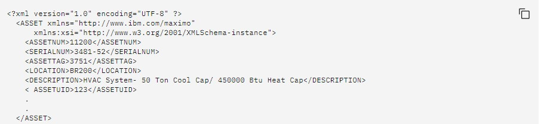

Este método se utiliza es cuando se necesita adquirir un archivo o recurso que se encuentran en un servidor web,
este método devuelve tanto las cabecera que contienen los metadatos del recurso solicitado y el recurso en si.
Por ejemplo el método siguiente recupera un recurso de objeto de negocio:
Se devuelve el XML siguiente:

La respuesta del recurso se muestra en XML. El valor del formato predeterminado puede configurarse en la propiedad del sistema mxe.rest.mbo.defaultformat.